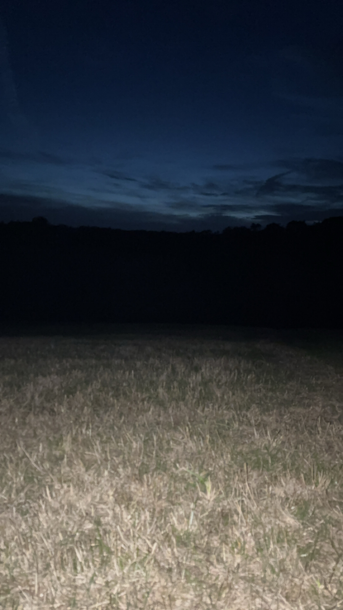

memeories with friends, good times and ambient nights, theres something very peaceful about standing there with people you're close to overlooking the view, taking it all in. Talking about the future and past memories at the same time.
Feeling uncertainity and hope at the same time.
